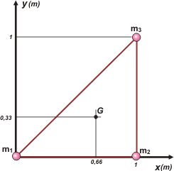

NO ME SALEN
PROBLEMAS RESUELTOS DE FÍSICA DEL CBC
(Centro de masa) |
|

|
| 2.14- Hallar el centro de gravedad de los cuerpos
en los casos a y b de la figura, gráfica y analíticamente.
Las esferas son homogéneas e iguales y
están unidas por varillas de masa despreciables. |
 |
|
Hay dos pequeñas ambigüedades en este problema. Vamos a solucionarlas. Supongamos que la distribución de masas del caso a) es un triángulo equilátero, y supongamos, también, que la distribución del b) es un triángulo rectángulo.
Ahora sí, manos a la obra. Los gráficos que hice ya incluyen el resultado, así no tenía que hacerlos dos veces. |
|
|
 |
Las coordenadas del centro de masa son:
xG = m1 x1 + m2 x2 + m3 x3 / 3 m
Las masas son todas iguales, yo las numeré para que no te pierdas cuando consigno sus posiciones. Pero queda claro que el denominador es
m1 + m2 + m3 = 3 m
y también puedo sacarles el subíndice cuando quiera |
xG = m1 0 m + m2 1 m + m3 0,5 m / 3 m
llegó el momento de sacarles el subíndice a las masas y extraerlas de los términos como factor común
xG = m 1,5 m / 3 m
m se cancela y ya. Pero tal vez te preguntes de dónde saqué la posición de la masa 3, esos 0,5 m. Bien, en todo triángulo equilátero la altura pasa por el punto medio del lado opuesto.
Del mismo modo el y del centro de masa será
yG = m1 y1 + m2 y2 + m3 y3 / 3 m
yG = m . 0 m + m . 0 m + m . 0,866 m / 3 m
yG = m 0,866 m / 3 m
Tal vez te preguntes de dónde saqué la posición de la masa 3, esos 0,866 m . Bien, si te fijás en el gráfico, la altura divide al triángulo equilátero en dos triángulos rectángulos. En cualquiera de ellos aplicamos pitágoras. La hipotenusa vale 1, el cateto menor vale 0,5 y el cateto restante es la sitancia hasta la masa 3. Sacalo por pitágoras. |
| a) |
xG = 0,5 m ; yG = 0,289 m |
|
| |
|
|  |
Ahora le toca el turno a la configuración b), que tiene las posiciones de las masas perfectamente determinadas. Luego, simplemente hay que aplicar la fórmula de las coordenadas del centro de masa, y ya.
xG = m1 x1 + m2 x2 + m3 x3 / 3 m
yG = m1 y1 + m2 y2 + m3 y3 / 3 m
todo en metros (para no embarrar tanto esta cancha de m)
xG = m1 0 + m2 1 + m3 1 / 3 m
yG = m1 0 + m2 0 + m3 1 / 3 m |
| b) |
xG = 0,66 m ; yG = 0,33 m |
|
|
|
| |
|
| |
DISCUSION: No te quedes con los numeritos... mirá las figuras, disfrutalas. Buscale simetrías. El centro de masa es un punto recontra súper interesante para la física y para el universo. Acá tenes dos casos recontra sencillos... ¡aprovechalos!
El centro de masa tiene un montón de propiedades curiosas. Tantas que es seguro que mirando las figuritas le vas a encontrar por lo menos un par. Animate. |
|
 |
| DESAFIO: Volver a encontrar las posiciones anteriores pero trabajando con dos SR tales que la posición (0;0) no coincida con ninguna masa. |
|
Todos los derechos reservados.
Se permite su reproducción citando la fuente. Última actualización nov-06
|
|
|